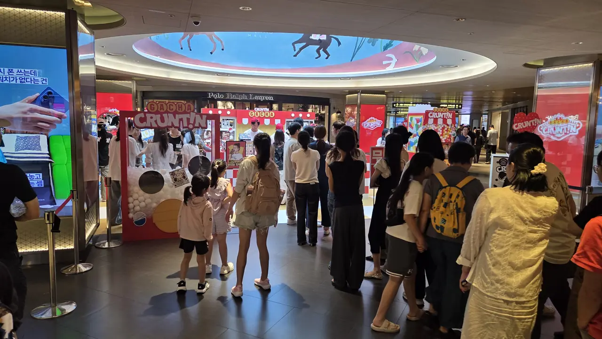

인력 구성 · 2026년 11월 17일
팝업스토어 운영 인력 구성 가이드 대기줄 응대 교대
팝업스토어 운영 인력은 입구 줄 관리, 매장 안 응대, 계산과 안내, 교대 인력 네 역할로 나눠 구성하면 빈틈이 줄어듭니다. 기간이 정해진 매장이라 오픈 첫날부터 사람이 몰리는 경우가 많고, 줄이 길어지면 매장 안이 아니라 입구에서 불만이 먼저 생깁니다. 이 글은 역할별로 필요한 것과 오픈 전 점검 항목을 정리했습니다.

- 팝업스토어는 입구 줄 관리가 매장 안 응대만큼 중요하다
- 역할을 입구, 응대, 계산과 안내, 교대로 나눠 빈틈을 줄인다
- 줄 방향과 안내 문구를 오픈 전에 정해 둔다
- 운영 기간이 길수록 교대와 인수인계 방식을 먼저 정한다
팝업스토어 인력의 특징
팝업스토어는 짧은 기간 동안 열리는 임시 매장입니다. 상설 매장과 달리 운영 방식이 아직 굳지 않은 상태에서 첫날 손님을 맞습니다. 그래서 인력 계획이 허술하면 줄이 엉키고, 같은 질문에 다른 대답이 나오고, 교대 시간마다 인수인계가 끊깁니다.
또 하나는 팝업 장소의 다양성입니다. 백화점 매장, 쇼핑몰 중앙, 거리 매장처럼 장소마다 통행 방식이 달라서 같은 인력 구성을 그대로 쓰기 어렵습니다. 도면과 현장 사진을 먼저 보고 역할 위치를 정하는 것이 기본입니다.

팝업스토어 운영 인력의 네 가지 역할
| 역할 | 하는 일 | 필요한 준비 |
|---|---|---|
| 입구 줄 관리 | 줄 방향 안내, 입장 순서 관리, 혼잡 시 입장 조절 | 줄 안내 봉, 안내 문구, 입장 규칙 |
| 매장 안 응대 | 제품이나 이벤트 설명, 체험 안내, 질문 응대 | 제품 정보 요약본, 응대 문구 |
| 계산과 안내 | 결제 안내, 수령 안내, 교환 문의 접수 | 결제 절차, 문의 시 보고 방법 |
| 교대 인력 | 휴식 시간 공백 채우기, 혼잡 시 유동 배치 | 모든 역할의 기본 절차 숙지 |
역할 이름은 행사마다 달라도 됩니다. 중요한 것은 누가 어느 자리의 일을 맡는지 모두가 알고 있는 것입니다. 한 사람이 두 역할을 겸하는 경우에도 어느 시간대에 어떤 역할인지는 정해 두어야 합니다.
대기줄을 설계하는 법
줄은 손님이 만드는 것이 아니라 운영하는 쪽이 설계하는 것입니다. 입구에서 줄이 어느 방향으로 늘어날지, 통로를 막지 않는지, 줄을 선 사람이 다음에 무엇을 하는지 미리 정해 둡니다.
- 줄이 매장 밖 통로를 막지 않도록 방향을 정합니다.
- 줄 끝에 안내 문구를 두어 마지막 줄이 어디인지 알려 줍니다.
- 입장 가능한 인원이 있다면 입장 조절 방식을 정합니다.
- 대기 중인 손님에게 먼저 설명할 수 있는 안내문을 준비합니다.

오픈 전에 점검할 것
- 입구 줄 방향과 안내 문구를 현장에서 한 번 걸어 보며 확인합니다.
- 매장 안 동선과 체험 구역이 겹치지 않는지 확인합니다.
- 계산과 수령 절차를 한 사람이 처음부터 끝까지 시연해 봅니다.
- 역할별 담당자와 교대 시간표, 보고 체계를 공유합니다.
- 자주 나올 질문과 정해진 답을 한 장으로 정리합니다.
지노컴퍼니의 서비스 영역에는 브랜드 홍보와 제품 시연, 로드쇼, 팝업스토어가 포함됩니다. 행사 전 최종 점검 미팅에서 위 항목을 함께 확인합니다. 인력 유형은 인력 서비스에서 볼 수 있습니다.
운영 기간이 길어질 때
기간이 길어지면 인력이 같은 사람으로 유지되지 않을 수 있습니다. 그래서 인수인계 자료가 중요합니다. 당일 이슈, 자주 나온 질문, 오늘 바뀐 규칙을 짧게 적어 두고 다음 근무자가 읽도록 합니다.
운영 기간이 정해져 있다면 단기 프로젝트나 인력 파견(상주) 같은 계약 방식을 비교해 볼 수 있습니다. 각 방식을 언제 고르는지는 이 블로그의 계약 방식 글에서 자세히 다룹니다. 진행 절차는 이용 안내에서 볼 수 있습니다. 팝업스토어 운영 인력이 필요하면 견적 문의로 행사 기간과 장소를 알려 주세요.
자주 묻는 질문
팝업스토어에는 어떤 인력이 필요한가요?
입구 줄 관리, 매장 안 응대, 계산과 안내, 교대 인력으로 나눠 보면 됩니다. 제품을 설명해야 하면 제품 설명 인력이나 시연 인력을 함께 검토합니다.
오픈 첫날은 어떻게 준비하나요?
첫날은 동선과 줄이 예상과 다르게 움직이는 경우가 많습니다. 현장 책임자가 상황을 보며 인력을 조정할 수 있도록 유동 배치 인력을 일부 남겨 두는 편이 안전합니다.
운영 중에 인력이 바뀌면 어떻게 하나요?
인수인계 자료를 만들어 두면 사람이 바뀌어도 운영이 이어집니다. 인력 교체 방식은 계약 때 확인해 두세요.